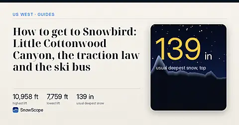

Montana Snowbowl in December: Missoula's $78 weekday hill
Montana Snowbowl is Missoula's local mountain: steep, plain and honestly priced, with a 2026/27 list of $78 on weekdays and $85 on weekends. On our snow history the middle and top of the hill are usually ready by mid-December. The base is another story.
See the live snow forecast for Montana Snowbowl in the SnowScope appSnow depth, powder alerts and the 3D map, free.
A college-town hill
Snowbowl is a short drive from Missoula, with 6 lifts and about 27 mi (43 km) of runs on our mapping, from roughly 4,990 ft (1,522 m) to 7,530 ft (2,296 m). There is no resort village; locals come up, ski hard, and go home.

The prices
The 2026/27 price table is short. An adult full day is $78 on weekdays and $85 on weekends and holidays. The afternoon ticket, from 12:30, is $72 on weekdays and $77 on weekends and holidays.
Snowbowl is also on the Indy Pass. The Indy Base Pass costs $419 and the Indy+ Pass $469, each with two days at every member area.

Why the base lags
The bottom of Snowbowl is low for the northern Rockies, and it shows. On a typical 15 December, the base has 16 in (40 cm), with only 28 % of winters above 20 in (50 cm). Mid-mountain, about 6,260 ft (1,909 m), has 30 in (76 cm), with 83 % of winters above 20 in, and the top 37 in (93 cm), with 91 %.
Week by week, the share of good-snow weeks at mid-mountain is 67 % in the first week of December, 83 % in the second and third, and 91 % in the week of Christmas. A lean December still had 18 in (45 cm) at mid-mountain on the 15th. Lasting snow usually arrives there in the second half of October.
Snowbowl, Bridger Bowl or Lookout Pass?
Bridger Bowl near Bozeman charges $86 online and $99 at the window, and its mid-mountain had 20 in (51 cm) on a typical 15 December, with only half of winters above 20 in. Lookout Pass, west on I-90, is $63 midweek with a reservation and had 30 in (75 cm).
In early December, Snowbowl and Lookout are the better bets of the three, and Snowbowl has the steeper terrain.
When December is lean
The first 15 winters of our record had 35 in (88 cm) at mid-mountain on a typical 15 December, and every one passed 20 in; the last 15 had 28 in (71 cm) and 80 %. Last winter was a good start, 30 in (76 cm) on that date. If a lean December comes, stay on the upper groomed runs and keep an eye on the snow map for the next storm.
Tips for skiers
- Ski on a weekday: the full day is $78, and the afternoon ticket $72.
- The access road is steep and narrow near the top: snow tires or chains are a must.
- Expect thin cover at the bottom in early December; ride up before judging the day.
- Steep terrain and early snow: check the avalanche forecast before leaving the ski area.
References and credits
- Montana Snowbowl, lift tickets 2026/27 (official) montanasnowbowl.com/sbblog/lift-tickets/
- Indy Pass, shop 2026-27 (official) www.indyskipass.com/shop
- Bridger Bowl, lift ticket pricing 2026/27 (official) bridgerbowl.com/tickets-passes/lift-tickets
- Lookout Pass, lift tickets 2026-2027 (official) skilookout.com/lift-tickets/
- OpenSkiMap (mapped lifts and runs) openskimap.org/
- avalanche.org, US avalanche centers and forecasts avalanche.org/
About these numbers
Current snow: the SnowScope snow map. Lifts, runs and heights: OpenSkiMap mapping. Prices: the official pages listed below, read on 13 November 2026; dynamic prices change with the date and with demand.
Official avalanche bulletins: Gallatin National Forest Avalanche Center
Cite this report
For research, teaching or the press: the numbers and charts are free to reuse under CC BY 4.0 with this citation.
SnowScope (2026), Montana Snowbowl in December: Missoula's $78 weekday hill, https://snowscope.app/blog/en/2026/11/montana-snowbowl-missoula-december-cheap-skiing.html, accessed 2026-11-14
SnowScope (Atlas Labs). (2026, November 14). Montana Snowbowl in December: Missoula's $78 weekday hill. SnowScope snow reports. https://snowscope.app/blog/en/2026/11/montana-snowbowl-missoula-december-cheap-skiing.html
BibTeX
@misc{snowscope2026montanasnowbowlmissoulad,
author = {{SnowScope (Atlas Labs)}},
title = {Montana Snowbowl in December: Missoula's $78 weekday hill},
year = {2026},
month = nov,
howpublished = {\url{https://snowscope.app/blog/en/2026/11/montana-snowbowl-missoula-december-cheap-skiing.html}},
note = {Published 2026-11-15 09:34 UTC; accessed 2026-11-14}
}· CC BY 4.0 · Methods, data and tools →
Montana Snowbowl: snow and temperature by height, this winter vs last (tools) →
Follow Montana Snowbowl
Free: a message when fresh snow is coming, and the forecast every morning.
More snow reports

Wolf Creek leads with mid-slope snow at 361% of normal for November 10, well ahead of typical and signaling significant water storage in the mountains.

Heavenly, Sierra-at-Tahoe and Mt. Rose have more snow on 19 November than in any winter since 1980-81. How much fell, the measured gauges, the weather behind it and the best days to go.

Getting to Snowbird in winter: one canyon road (SR-210), Utah's traction law, the UTA ski bus and the drive from Salt Lake City airport.